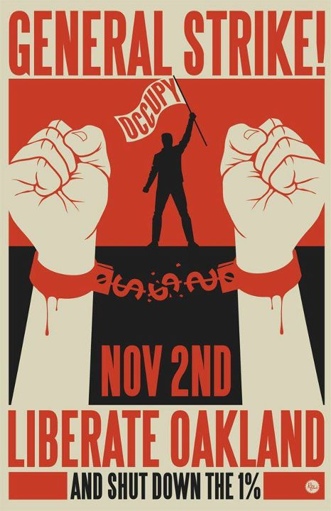

Oakland General Strike - November 2, 2011!
Get the latest Oakland General Strike news updates - from www.indybay.org
This report was sent by a member of the Bay Area IWW:
I just returned from downtown Oakland. The turnout at the general assembly was overwhelming. The GA was held in the amphitheater of Oscar Grant Plaza.
The entire "seating" area was packed from side to side. The depressed area between it and the stage was packed. The facilitators had to keep requesting that people move back because the stage area was packed full as was the walkway behind it and the City Hall steps.
We put a proposal to the crowd that one week from today we have a shut down and general strike in Oakland. Many concerns were raised - whether we could organize that in time, could we get workers to strike, etc. Boots Riley (of Boots and the Coup - an excellent radical rap group in Oakland) made the point that thousands of union workers are looking for some point of inspiration. Others pointed out that we have to strike when the iron is hot.
In the end, the vote on the proposal went as follows:
- Yes - 1484
- Abstain - 76
- No - 44
If comrades want to spread this message as far and wide as possible, and launch a call for a global general strike/day of action on that date, I think it would be great.
IWW Links:
- Bay Area IWW - Main Page
Audio Clips:
- Fellow Worker Gifford H on KPFA's Against the Grain on the 1946 General Strike - October 31, 2011
- Live Coverage of Bay Area IWW Member John Reimann supporting the call for a General Strike on KPFA (about 00:40:07 minutes into the recording).
Union Endorsers (listed in chronological order of endorsement):
- SEIU LOCAL 1021 - October 31, 2011
- U.C. UAW Local 2865 - October 31, 2011
- Alameda Central Labor Council - October 31, 2011
- Philippine Airline Employees Association - October 31, 2011
- Berkeley Federation of Teachers - October 31, 2011
- Oakland Teachers Union OEA - October 31, 2011
- International Longshore and Warehouse Union, Local 10 - October 28, 2011
- Carpenters Local 713 - October 27, 2011
- Union Support for General Strike and Protests Nov. 2 - Bay Area Indymedia, October 28, 2011
Media Coverage:
- Occupy Oakland Plans for General Strike, Occupation of Foreclosed Homes - by Jorge Rivas, Color Lines, November 1, 2011
- Oakland Mayor, Police Clash Over General Strike - by Henry K. Lee, San Francisco Chronicle, November 1, 2011
- Shut Down the 1 Percent: Occupy Oakland Calls General Strike - TruthOut.Org, November 1, 2011
- Occupy Oakland's general strike call: 'Shut down the 1%' - by Jason Kessler, CNN Money, November 1, 2011
- Occupy Oakland, police taking different approaches to public safety at upcoming strike - By Cecily Burt and Sean Maher, Oakland Tribune, October 31, 2011
- Occupy Oakland Tries to Pull Off General Strike - By David Dayen, FireDogLake.Com, October 31, 2011
- Occupy Oakland plans general strike - UPI, October 31, 2011
- Elementary school to join Occupy Oakland strike - By Katy Murray, Inside Bay Area, Contra Costa Times, October 28, 2011
- Occupy Oakland protesters regroup: Iraq vet hurt - San Francisco Chronicle, October 27, 2011
- Occupy Oakland makes plans for citywide general strike - San Jose Mercury News, October 27, 2011
Miscellaneous Links:
[From the Occupy Oakland Site]:
Below is the proposal passed by the Occupy Oakland General Assembly on Wednesday October 26, 2011 in reclaimed Oscar Grant Plaza. 1607 people voted. 1484 voted in favor of the resolution, 77 abstained and 46 voted against it, passing the proposal at 96.9%. The General Assembly operates on a modified consensus process that passes proposals with 90% in favor and with abstaining votes removed from the final count.
PROPOSAL:
We as fellow occupiers of Oscar Grant Plaza propose that on Wednesday November 2, 2011, we liberate Oakland and shut down the 1%.
We propose a city wide general strike and we propose we invite all students to walk out of school. Instead of workers going to work and students going to school, the people will converge on downtown Oakland to shut down the city.
All banks and corporations should close down for the day or we will march on them.
While we are calling for a general strike, we are also calling for much more. People who organize out of their neighborhoods, schools, community organizations, affinity groups, workplaces and families are encouraged to self organize in a way that allows them to participate in shutting down the city in whatever manner they are comfortable with and capable of.
The whole world is watching Oakland. Let’s show them what is possible.
The Strike Coordinating Council will begin meeting everyday at 5pm in Oscar Grant Plaza before the daily General Assembly at 7pm. All strike participants are invited. Stay tuned for much more information and see you next Wednesday.